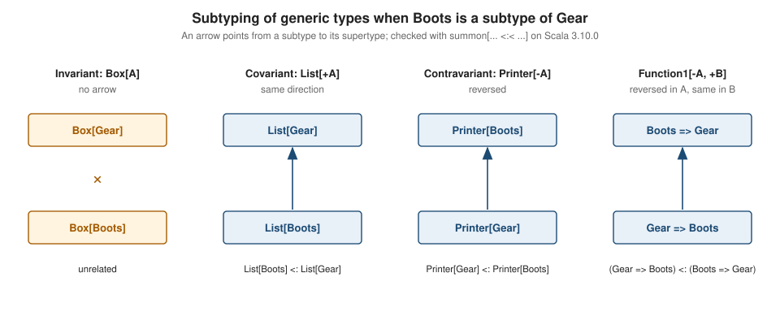

Variance
|
This content was generated with the assistance of AI and should be verified against the official documentation before being relied on in production. |
This page is written against Scala 3.10 (3.10.0, released 2026-10-12) and every example was compiled and run with Scala 3.10.0 through Scala CLI on JDK 26 (checked on 2026-10-15). Variance has not changed since Scala 3.0, so the 3.9 LTS line (3.9.0, 2026-09-03) and 3.3 LTS behave the same, with three small differences listed in Scala 3.9 LTS versus 3.10.
Variance answers one question: if Boots is a subtype of Gear, how are Box[Boots] and Box[Gear] related? There
are three possible answers, and Scala lets the author of the generic type choose one, once, on the type parameter. The
examples use the trailhead scenario, where a toolkit that plans hikes on a network of mountain trails models the gear a
hiker carries. The two classes used throughout are:
class Gear(val name: String)
class Boots(name: String) extends Gear(name)Source: Scala 3 Book: Variance
For the type parameters themselves, bounds and evidence see Generics & Bounds;
for Nothing, Any and the rest of the type lattice see Type Hierarchy & Matchable.
Three kinds of variance
A type parameter is invariant when it has no variance annotation, covariant when it is declared +A, and
contravariant when it is declared -A. The annotation belongs to the declaration of the generic type, so every use of
the type inherits it automatically. This is called declaration-site variance.
| Declaration | Name | Meaning if Boots is a subtype of Gear |
|---|---|---|
|
Invariant |
|
|
Covariant |
|
|
Contravariant |
|
The next program declares one type of each kind and uses the covariant and the contravariant ones.
//> using scala 3.10.0
package trailhead
class Gear(val name: String)
class Boots(name: String) extends Gear(name)
class Box[A](val content: A)
class Pack[+A](val content: A)
trait Printer[-A]:
def print(a: A): String
@main def run(): Unit =
val bootsPack: Pack[Boots] = Pack(Boots("Alpina"))
val gearPack: Pack[Gear] = bootsPack
println(gearPack.content.name)
val gearPrinter: Printer[Gear] = g => s"gear: ${g.name}"
val bootsPrinter: Printer[Boots] = gearPrinter
println(bootsPrinter.print(Boots("Salewa")))Alpina
gear: SalewaA pack of boots can be used where a pack of gear is expected, because everything you can take out of it is a piece of gear. A printer that knows how to print any gear can be used where a boots printer is expected, because it can certainly print boots. The converse in each case is wrong, and the compiler refuses it.

Invariance: the default
A type parameter without a sign is invariant. Box[Boots] is not a Box[Gear] even though Boots is a Gear.
//> using scala 3.10.0
class Gear
class Boots extends Gear
class Box[A](val content: A)
@main def run(): Unit =
val boots: Box[Boots] = Box(Boots())
val gear: Box[Gear] = boots
println(gear)[error] ./e1.scala:9:25
[error] Found: (boots : Box[Boots])
[error] Required: Box[Gear]
[error] val gear: Box[Gear] = boots
[error] ^^^^^Source: Scala 3 Book: Invariant types
Invariance is the safe default because it is the only variance that works for every generic type. The sections below show
what goes wrong when a type that both reads and writes its parameter is made variant. The Tour of Scala makes the same
points with a Foo[A]-style example in Tour of Scala: Variances.
Covariance: producers
A covariant type parameter +A promises that the type only produces values of type A. You can read an A out of
it, but you can never hand it an A. The standard library’s immutable collections and Option, Either, Try and
Future are all covariant, and the compiler checks the promise (see Variance positions and the errors they raise).
Because Nil is a List[Nothing] and Nothing is a subtype of every type, a single empty list serves for every element
type. That is a direct consequence of covariance.
//> using scala 3.10.0
package trailhead
class Gear(val name: String)
class Boots(name: String) extends Gear(name)
@main def run(): Unit =
summon[List[Boots] <:< List[Gear]]
summon[Vector[Boots] <:< Seq[Gear]]
summon[Option[Boots] <:< Option[Gear]]
summon[Either[Boots, Boots] <:< Either[Gear, Gear]]
summon[(Boots, Boots) <:< (Gear, Gear)]
summon[Map[String, Boots] <:< Map[String, Gear]]
val empty: List[Boots] = Nil
println(empty.isEmpty)The program compiles and prints true. summon[X <:< Y] is the idiomatic way to ask the compiler whether X is a
subtype of Y: it compiles exactly when the relation holds, which makes it a handy checker for this page’s claims.
Map is covariant in its value type but invariant in its key type, so it is a good reminder that variance is chosen per
type parameter.
//> using scala 3.10.0
package trailhead
class Gear(val name: String)
class Boots(name: String) extends Gear(name)
@main def run(): Unit =
val keyed: Map[Gear, Boots] = Map.empty
val strictKey: Map[Boots, Boots] = keyed[error] ./e10b.scala:9:38
[error] Found: (keyed : Map[trailhead.Gear, trailhead.Boots])
[error] Required: Map[trailhead.Boots, trailhead.Boots]Source: Tour of Scala: Covariance
Contravariance: consumers
A contravariant type parameter -A promises the opposite: the type only consumes values of type A. You can hand it an
A but you never get one back. Typical consumers are printers, comparators, serializers, event handlers and validators.
The most important contravariant types in the library are the function types, covered in Variance of function types,
and CanEqual (see Pattern Matching for its use with strict equality).
A consumer of a broader type can stand in for a consumer of a narrower one. That is the Liskov substitution principle applied to type arguments: anything the narrower consumer is asked to handle, the broader consumer can handle too.
Producers versus consumers
The informal rule is the one Java programmers know as PECS (producer extends, consumer super): covariant for what a type produces, contravariant for what it consumes, invariant when it does both. The Scala type system encodes it in the type declaration instead of at each use.
| The type | What it does with A |
Variance |
|---|---|---|
|
Only produces `A`s |
|
|
Only consumes `A`s |
|
|
Reads and writes |
invariant |
|
Consumes an |
|
The table records the declarations in the standard library. All of the entries were checked on 3.10.0 with summon and
with deliberately failing assignments: List, Vector, Option, Either, Try, Future, Iterator, tuples,
Map (value type) and PartialFunction (result type) are covariant, Function1, PartialFunction (argument type) and
CanEqual are contravariant in the places named, and Set, Array, Buffer, Map (key type) and Ordering are
invariant. Note that scala.math.Ordering is invariant, so an Ordering[Gear] cannot be passed where an
Ordering[Boots] is required, even though it could order boots just fine. If you design a comparator type of your own,
consider -A.
Variance of function types
A function value A => B is an instance of Function1[-A, +B]: contravariant in the argument type, covariant in the result
type. A function that accepts any gear and returns boots can be used where a function from boots to gear is expected,
because it accepts at least what is asked of it and returns at least what is promised.
//> using scala 3.10.0
package trailhead
class Gear(val name: String)
class Boots(name: String) extends Gear(name)
@main def run(): Unit =
val resole: Gear => Boots = g => Boots(g.name + " (resoled)")
val fitter: Boots => Gear = resole
println(fitter(Boots("Alpina")).name)
val sameFamily: Gear => Gear = resole
println(sameFamily(Gear("Rope")).name)Alpina (resoled)
Rope (resoled)Source: Scala API: Function1
Both assignments compile. The reverse, using a Boots => Gear where a Boots => Boots is required, does not:
//> using scala 3.10.0
package trailhead
class Gear(val name: String)
class Boots(name: String) extends Gear(name)
@main def run(): Unit =
val fitter: Boots => Gear = b => b
val strict: Boots => Boots = fitter[error] ./f2.scala:9:32
[error] Found: (fitter : trailhead.Boots => trailhead.Gear)
[error] Required: trailhead.Boots => trailhead.Boots
[error] val strict: Boots => Boots = fitter
[error] ^^^^^^Source: Tour of Scala: Contravariance. For function values in general see Functions as Values.
The same rule holds for the other function-like types. A PartialFunction[-A, +B] is contravariant in its argument and
covariant in its result, and the tuple functions FunctionN follow the pattern -T1, ..., -Tn, +R.
Why mutable collections are invariant
Covariance and mutation do not mix. If an ArrayBuffer[String] could be used as an ArrayBuffer[Any], one could write
an Int into it through the Any view, and a later read as String would fail with a ClassCastException far from the
real mistake. The Scala library therefore declares the mutable collections invariant, and the compiler enforces it:
//> using scala 3.10.0
import scala.collection.mutable.ArrayBuffer
@main def run(): Unit =
val strings = ArrayBuffer("a", "b")
val anys: ArrayBuffer[Any] = strings[error] ./e7.scala:5:32
[error] Found: (strings : scala.collection.mutable.ArrayBuffer[String])
[error] Required: scala.collection.mutable.ArrayBuffer[Any]Array[String] is not an Array[Object] either, and neither is Set[Boots] a Set[Gear], because sets use their
element type for equality and hashing.
Java made the opposite choice for arrays, and pays for it at run time. Java arrays are covariant, so the following Java
program compiles and then throws when the store happens (run on JDK 26, java Arrays.java):
Object[] objects = new String[] {"a"};
objects[0] = Integer.valueOf(1);ArrayStoreException: java.lang.IntegerScala rejects the first line at compile time, which turns that run-time exception into a type error. The comparison with Java’s generics is in Comparison with Java and Kotlin.
Variance positions and the errors they raise
The compiler checks every use of a variant type parameter inside the class. Each position is either covariant (what the
class produces: the result type of a method, the type of an immutable field) or contravariant (what it consumes: a method
parameter type), and a nested position can flip it: the argument of a function parameter, for example, is covariant again,
because two contravariant positions cancel out. A +A parameter may appear only in covariant positions and a -A
parameter only in contravariant ones.
The covariant case:
//> using scala 3.10.0
class Gear
class Boots extends Gear
class Cell[+A](var content: A)
class Stash[+A]:
def add(a: A): Stash[A] = this[error] ./e2.scala:5:16
[error] covariant type A occurs in invariant position in type A of variable content
[error] class Cell[+A](var content: A)
[error] ^^^^^^^^^^^^^^
[error] ./e2.scala:8:11
[error] covariant type A occurs in contravariant position in type A of parameter a
[error] def add(a: A): Stash[A] = this
[error] ^^^^A var is both read and written, so its type appears in an invariant position. A method parameter is a consumer. The
contravariant mirror image:
//> using scala 3.10.0
class Gear
class Boots extends Gear
class Printer[-A](val last: A)
trait Source[-A]:
def next(): A[error] ./e3.scala:5:19
[error] contravariant type A occurs in covariant position in type A of value last
[error] class Printer[-A](val last: A)
[error] ^^^^^^^^^^^
[error] ./e3.scala:7:3
[error] contravariant type A occurs in covariant position in type (): A of method next
[error] def next(): A
[error] ^^^^^^^^^^^^^On the 3.3 LTS line (checked with 3.3.8) the first message about a var names the generated setter instead: the text is
covariant type A occurs in contravariant position in type A of parameter content_=. The meaning is the same.
Source: Scala 3 Book: Variance and Tour of Scala: Variances
Fixing a covariant class with a lower bound
A covariant Stash[+A] cannot have def add(a: A), but it can have an add that accepts any supertype B of A and
returns a stash of that wider type. The lower bound B >: A puts A in a position that is acceptable, and the result is
what an immutable collection does: adding a poles to a stash of boots gives a stash of gear.
//> using scala 3.10.0
package trailhead
class Gear(val name: String)
class Boots(name: String) extends Gear(name)
class Poles(name: String) extends Gear(name)
class Stash[+A](val items: List[A]):
def add[B >: A](b: B): Stash[B] = Stash(b :: items)
@main def run(): Unit =
val bootsOnly: Stash[Boots] = Stash(List(Boots("Alpina")))
val mixed: Stash[Gear] = bootsOnly.add(Poles("Leki"))
println(mixed.items.map(_.name))
val oddly = bootsOnly.add("a map")
val check: Stash[Gear | String] = oddly
println(check.items.size)List(Leki, Alpina)
2Source: Tour of Scala: Lower Type Bounds
The inferred type of bootsOnly.add(Poles("Leki")) is Stash[Gear], the least upper bound of Boots and Poles.
Adding a String is accepted too, because the bound only requires a supertype of Boots, and the result is a stash of
the union Gear | String (see Union & Intersection Types).
The same shape appears in the library as the prepended method of List: def prepended[B >: A](elem: B): List[B].
A method that merely tests membership hits the same wall, because A is again a parameter:
[error] ./e16.scala:9:16
[error] covariant type A occurs in contravariant position in type A of parameter a
[error] def contains(a: A): Boolean = items.contains(a)The library’s contains for Seq[+A] is declared def contains[A1 >: A](elem: A1): Boolean for exactly this reason.
A contravariant class uses an upper bound the same way: def foo[B <: A](b: B) is fine where def foo: A is not.
Private state is exempt
The compiler does not apply variance checks to members that cannot be seen from outside the instance. A private field
may use the type parameter freely, while protected ones stay checked:
//> using scala 3.10.0
class Shelf[+A](items: List[A]):
private var mine: List[A] = items
protected var prot: List[A] = items
def first: A = mine.head[error] ./e12.scala:5:3
[error] covariant type A occurs in invariant position in type List[A] of variable prot
[error] protected var prot: List[A] = items
[error] ^^^^^^^^^^^^^^^^^^^^^^^^^^^^^^^^^^^private var mine compiled. In Scala 2 the exemption applied to private[this], the object-private form; Scala 3
accepts private[this] with a warning and treats it as private (see
Scala 3 Reference: Dropped: private[this] and protected[this]),
and the check above shows that private itself is exempt. The accessor of a private field is not visible to a client, so
the unsound call cannot be written. Because the field’s type is not checked, you are responsible for the soundness, as in
this queue, which keeps its contents as List[Any] and casts on the way out:
//> using scala 3.10.0
package trailhead
import scala.annotation.unchecked.uncheckedVariance
class Gear(val name: String)
class Boots(name: String) extends Gear(name)
class Queue[+A]:
private var buffer: List[Any] = Nil
def push[B >: A](b: B): Queue[B] =
val q = Queue[B]()
q.buffer = b :: buffer
q
def peek: Option[A] = buffer.headOption.asInstanceOf[Option[A]]
class Cache[+A]:
private var slot: A @uncheckedVariance = scala.compiletime.uninitialized
def get: A = slot
enum Slot[+A]:
case Full(value: A)
case Empty
@main def run(): Unit =
val q: Queue[Gear] = Queue[Boots]().push(Boots("Alpina"))
println(q.peek.map(_.name))
val s: Slot[Gear] = Slot.Full(Boots("Salewa"))
val e: Slot[Gear] = Slot.Empty
println(s)
println(e)Some(Alpina)
Full(trailhead.Boots@725bef66)
EmptySource: Scala API: uncheckedVariance
@uncheckedVariance (from scala.annotation.unchecked) tells the checker to skip the annotated type. The standard
library uses it where an invariant-looking position is in fact safe, but in application code it is a last resort: the
compiler stops protecting you, and a wrong use turns into a ClassCastException. Prefer lower bounds and private state
first. The hexadecimal number in the output is the default toString of Boots and varies per run.
Enums and variance
An enum can be given a variance annotation like any class, and the compiler then infers the variance of its cases. The
parameterless case Empty above has type Slot[Nothing], which is a subtype of every Slot[A] because Slot is
covariant. That is why val e: Slot[Gear] = Slot.Empty compiled. A case such as Full(value: A) is fine in a covariant
enum, because its parameter is an immutable field in a covariant position. See
Enums and Algebraic Data Types & GADTs
for the rules that desugar enum cases into classes, and
Case Classes for case classes themselves, which follow the same checks.
Declaration-site versus use-site variance
Scala writes variance on the declaration. Java writes it at every use, with wildcards: List<? extends Gear> reads from
any list of some subtype of Gear, and List<? super Boots> writes boots into any list of some supertype. Scala 3 can
express the same use-site idea for Java types (and for its own invariant types) with wildcards written ?:
//> using scala 3.10.0
package trailhead
class Gear(val name: String)
class Boots(name: String) extends Gear(name)
def names(gear: java.util.List[? <: Gear]): List[String] =
val b = List.newBuilder[String]
gear.forEach(g => b += g.name)
b.result()
def fill(sink: java.util.List[? >: Boots]): Unit =
sink.add(Boots("Alpina"))
@main def run(): Unit =
val boots = java.util.ArrayList[Boots]()
boots.add(Boots("Salewa"))
println(names(boots))
val gear = java.util.ArrayList[Gear]()
fill(gear)
println(names(gear))List(Salewa)
List(Alpina)java.util.List[Boots] is not a java.util.List[Gear] (Java’s generics are invariant), so the ? <: Gear and ? >: Boots
wildcards are how a Scala method accepts them in a flexible way. The underscore form _ <: Gear was deprecated in Scala
3.4 in favour of ? (see Scala 3 Reference: Wildcard Arguments in Types).
Scala’s own immutable collections rarely need this, because their variance is declared once.
Comparison with Java and Kotlin
-
Java’s generics are invariant by default and gain variance with use-site wildcards (
? extends,? super), plus the PECS mnemonic; Java arrays are covariant and checked at run time (ArrayStoreException). Scala’s+A/-Ais declaration-site variance, so client code is shorter. Kotlin took the Scala model but renamed it:out Tis+Aandin Tis-A, and Kotlin also has use-site projections. See Java Generics and Kotlin Generics and Variance. -
Scala 2 uses the identical
+Aand-Asyntax, and the same rules, including the object-private exemption spelledprivate[this]. -
Both Scala and Kotlin forbid the covariant-read/write mistakes at compile time, which Java only does through wildcard use-site checks.
Where the books are outdated
-
Scala 2 material that relies on
private[this]to exempt a member from the variance check uses a form that Scala 3 accepts only with a warning. Writeprivateinstead. -
Explanations that rely on
List[_]orFoo[_ <: Bar]use the deprecated wildcard spelling; Scala 3.4 and later prefers?.
Scala 3.9 LTS versus 3.10
Variance rules, the position checks and the standard-library declarations are unchanged since 3.0. The differences observed when compiling the same snippets are:
-
On 3.3.8 the error for a covariant
varnames the setter (content_=); 3.9.0 and 3.10.0 sayvariable content. -
private[this]triggers the same deprecation warning on 3.9.0 and 3.10.0 (checked with a compile on each). -
The
?wildcard spelling is accepted on 3.3.8 too (checked); the deprecation of the underscore spelling came with 3.4.
Everything else in this page behaved identically when the covariant, contravariant, bound and @uncheckedVariance
examples were compiled on 3.3.8, 3.9.0 and 3.10.0.